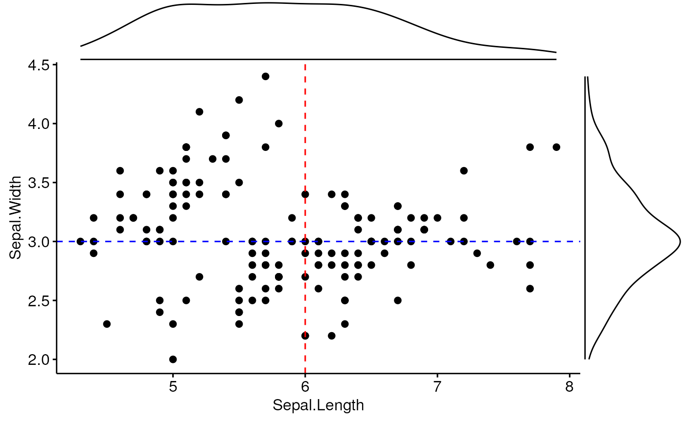
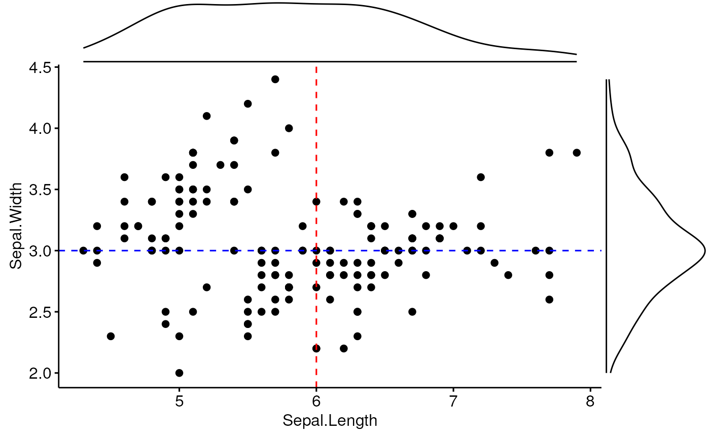

Create a scatter plot with marginal histograms, density plots or box plots.
ggscatterhist(
data,
x,
y,
group = NULL,
color = "black",
fill = NA,
palette = NULL,
shape = 19,
size = 2,
linetype = "solid",
bins = 30,
margin.plot = c("density", "histogram", "boxplot"),
margin.params = list(),
margin.ggtheme = theme_void(),
margin.space = FALSE,
main.plot.size = 2,
margin.plot.size = 1,
title = NULL,
xlab = NULL,
ylab = NULL,
legend = "top",
ggtheme = theme_pubr(),
print = TRUE,
...
)
# S3 method for ggscatterhist
print(
x,
margin.space = FALSE,
main.plot.size = 2,
margin.plot.size = 1,
title = NULL,
legend = "top",
...
)Arguments
- data
a data frame
- x
an object of class
ggscatterhist.- y
y variables for drawing.
- group
a grouping variable. Change points color and shape by groups if the options
colorandshapeare missing. Should be also specified when you want to create a marginal box plot that is grouped.- color, fill
point colors.
- palette
the color palette to be used for coloring or filling by groups. Allowed values include "grey" for grey color palettes; brewer palettes e.g. "RdBu", "Blues", ...; or custom color palette e.g. c("blue", "red"); and scientific journal palettes from ggsci R package, e.g.: "npg", "aaas", "lancet", "jco", "ucscgb", "uchicago", "simpsons" and "rickandmorty".
- shape
point shape. See
show_point_shapes.- size
Numeric value (e.g.: size = 1). change the size of points and outlines.
- linetype
line type ("solid", "dashed", ...)
- bins
Number of histogram bins. Defaults to 30. Pick a better value that fit to your data.
- margin.plot
the type of the marginal plot. Default is "hist".
- margin.params
parameters to be applied to the marginal plots.
- margin.ggtheme
the theme of the marginal plot. Default is
theme_void().- margin.space
logical value. If TRUE, adds space between the main plot and the marginal plot.
- main.plot.size
the width of the main plot. Default is 2.
- margin.plot.size
the width of the marginal plot. Default is 1.
- title
plot main title.
- xlab
character vector specifying x axis labels. Use xlab = FALSE to hide xlab.
- ylab
character vector specifying y axis labels. Use ylab = FALSE to hide ylab.
- legend
specify the legend position. Allowed values include: "top", "bottom", "left", "right".
- ggtheme
the theme to be used for the scatter plot. Default is
theme_pubr().logical value. If
TRUE(default), print the plot.- ...
other arguments passed to the function
ggscatter().
Value
an object of class ggscatterhist, which is list of ggplots,
including the following elements:
xplot: marginal x-axis plot;
yplot: marginal y-axis plot.
.
User can modify each of plot before printing.
Examples
# Basic scatter plot with marginal density plot
ggscatterhist(iris, x = "Sepal.Length", y = "Sepal.Width",
color = "#00AFBB",
margin.params = list(fill = "lightgray"))
 # Grouped data
ggscatterhist(
iris, x = "Sepal.Length", y = "Sepal.Width",
color = "Species", size = 3, alpha = 0.6,
palette = c("#00AFBB", "#E7B800", "#FC4E07"),
margin.params = list(fill = "Species", color = "black", size = 0.2)
)
# Grouped data
ggscatterhist(
iris, x = "Sepal.Length", y = "Sepal.Width",
color = "Species", size = 3, alpha = 0.6,
palette = c("#00AFBB", "#E7B800", "#FC4E07"),
margin.params = list(fill = "Species", color = "black", size = 0.2)
)
 # Use boxplot as marginal
ggscatterhist(
iris, x = "Sepal.Length", y = "Sepal.Width",
color = "Species", size = 3, alpha = 0.6,
palette = c("#00AFBB", "#E7B800", "#FC4E07"),
margin.plot = "boxplot",
ggtheme = theme_bw()
)
# Use boxplot as marginal
ggscatterhist(
iris, x = "Sepal.Length", y = "Sepal.Width",
color = "Species", size = 3, alpha = 0.6,
palette = c("#00AFBB", "#E7B800", "#FC4E07"),
margin.plot = "boxplot",
ggtheme = theme_bw()
)
 # Add vertical and horizontal line to a ggscatterhist
plots <- ggscatterhist(iris, x = "Sepal.Length", y = "Sepal.Width", print = FALSE)
plots$sp <- plots$sp +
geom_hline(yintercept = 3, linetype = "dashed", color = "blue") +
geom_vline(xintercept = 6, linetype = "dashed", color = "red")
plots

# Add vertical and horizontal line to a ggscatterhist
plots <- ggscatterhist(iris, x = "Sepal.Length", y = "Sepal.Width", print = FALSE)
plots$sp <- plots$sp +
geom_hline(yintercept = 3, linetype = "dashed", color = "blue") +
geom_vline(xintercept = 6, linetype = "dashed", color = "red")
plots
